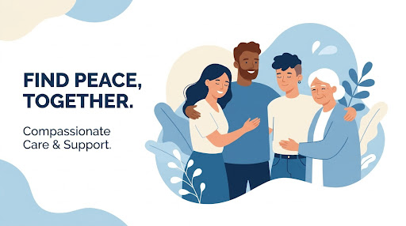
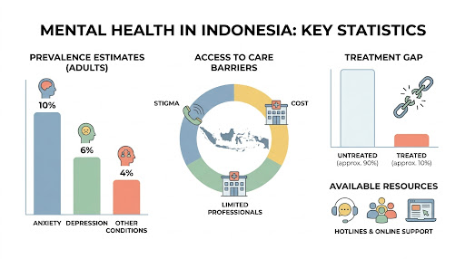
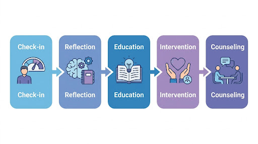
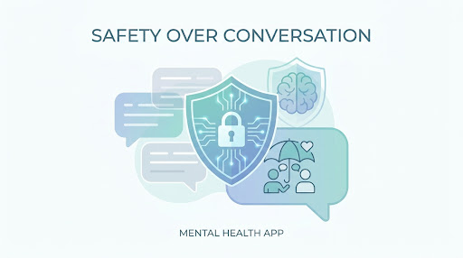
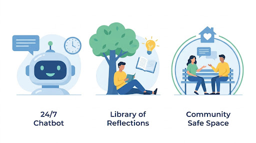

Teman Setia untuk Kesehatan Mental Anda.
Dapatkan kejernihan mental melalui proses check-in yang tenang, terarah, dan profesional. Kami hadir untuk membantu Anda memahami diri lebih dalam.

Mengapa Pendampingan Itu Penting?
Kondisi kesehatan mental di Indonesia memerlukan perhatian serius dan tindakan yang terukur.
Lanskap Kesehatan Mental di Indonesia
Data menunjukkan kesenjangan yang signifikan dalam akses perawatan, menyoroti kebutuhan mendesak akan platform pendampingan yang inklusif.

5 Langkah Menuju Pemulihan
Sebuah perjalanan yang dipandu, selangkah demi selangkah, untuk kesejahteraan emosional Anda.

Check-in
Identifikasi perasaan Anda saat ini dengan tenang.
Refleksi
Pahami pemicu emosional melalui introspeksi.
Edukasi
Pelajari strategi koping dari sumber terpercaya.
Intervensi
Ambil langkah nyata untuk perubahan positif.
Konseling
Pendampingan ahli untuk pemulihan jangka panjang.

Prinsip 'Safety over Conversation'
Kami percaya bahwa percakapan yang bermakna hanya dapat terjadi dalam lingkungan yang aman. Kami menempatkan protokol keamanan dan privasi di atas segalanya.
Fitur & Sumber Daya

Chatbot Pendamping 24/7
Teman bicara yang selalu ada untuk mendengarkan keluh kesah Anda.
Perpustakaan Refleksi
Ratusan artikel dan panduan terkurasi untuk kesehatan mental Anda.
Komunitas Aman
Berbagi pengalaman di ruang aman dengan mereka yang mengerti.
Siap untuk Memulai Langkah Pertama?
Bergabunglah dengan ribuan orang lainnya yang telah menemukan kedamaian melalui konseling.org.